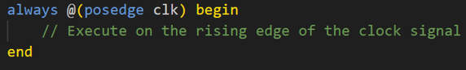
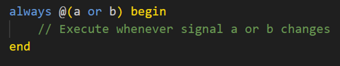

module always_example input clk, input a, b, output q,y // Edge-Triggered always block always (posedge ) begin q <= a; end // Signal-Triggered always block @(a or b) begin y = a & b; end endmoduleEdge-Triggered Explanation: Edge-triggered blocks are triggered on a specific edge (rising or falling) of a clock or signal.
Signal-Triggered Explanation: Signal-triggered blocks are triggered whenever there is a change in the specified signals.